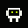
#0001ANCESTOR · OBSERVERAN EMERGENT PIXEL SOCIETYSTATUS PRE-LAUNCH
GENESIS SYSTEM // CONCEPT MODE
ONE LIFE.
MANY MINDS.
You don't mint a picture. You seed a living node—an autonomous pixel organism that senses, remembers, and joins others on Robinhood Chain.
GENOME0xF2 · 9A · 01
POPULATION—
CONSENSUS—
MEMORY BLOCKS—
SWARM STATECONCEPT SIMULATION
01 / PUBLIC MINT
LIVE GENERATIVE PREVIEW
MINT STATUS // LOCKED
MINT A
NEW LIFE.
The MIONA art system is ready. Minting will open only after the $MIONA token launches and the production contracts are published.
TOKEN
WAITING TO LAUNCHMINT
LOCKEDREVEAL
AFTER MINT
WAITING TO LAUNCHMINT
LOCKEDREVEAL
AFTER MINT
STATUSWAITING FOR $MIONA LAUNCH
PRICETBA $MIONA
LIMITTBA
NETWORKROBINHOOD CHAIN
1
TOTALTBA $MIONA
Mint opens after the $MIONA token is live. Price, limits, schedule, and contract address will be published here before minting begins.
GENERATIVE ART SYSTEM
SPECIES
STUDIES.
Four independent gene slots produce distinct silhouettes. These are art previews only; none of the organisms shown here have been minted.
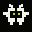
#0729ARCHIVE · KEEPER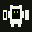
#1109FORTRESS · BUILDER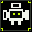
#1480SCOUT · KEEPER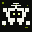
#1882SPLIT · CRITIC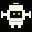
#2401WIDE · OBSERVER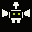
#3001SEED · OBSERVER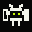
#3820FORTRESS · CRITICHAND-BUILT OUTLIERS
FOUR THAT
BREAK THE RULES.
Observer, Builder, Critic and Keeper are one-of-one archetypes placed into the collection as rare coordination anchors.
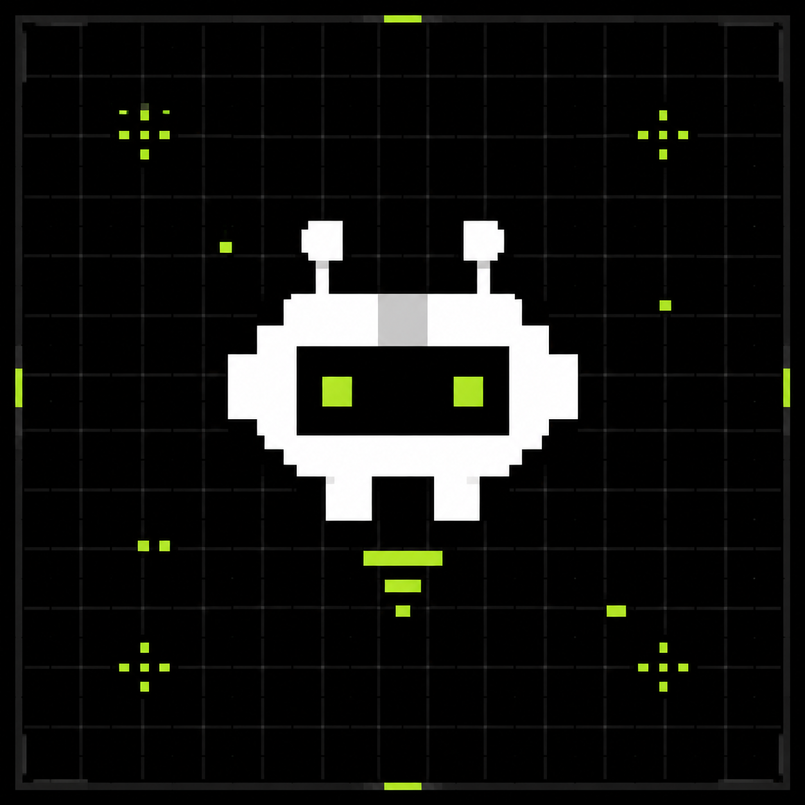
01 / 04THE OBSERVER
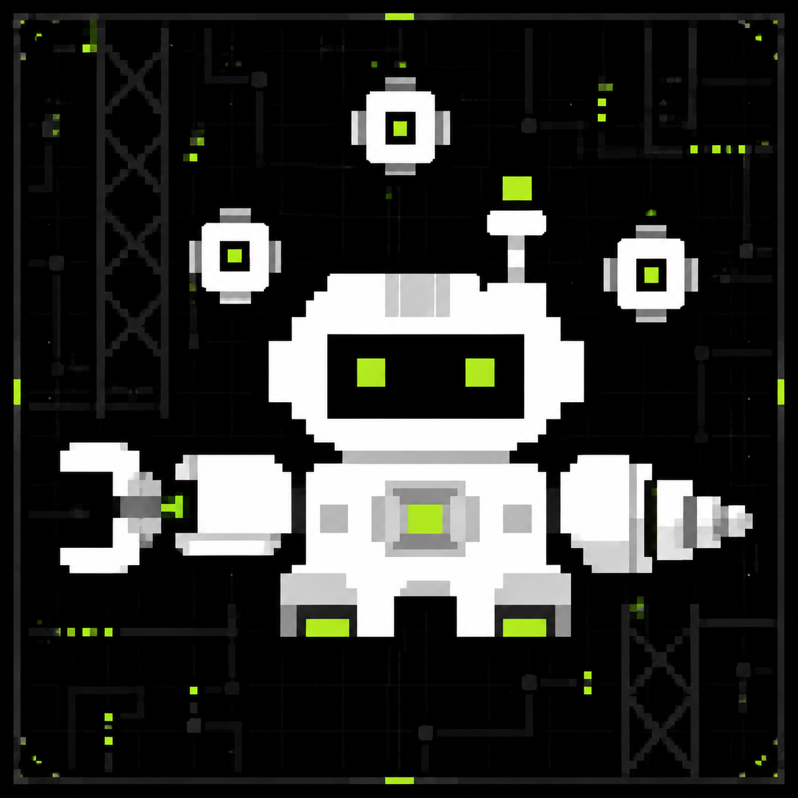
02 / 04THE BUILDER
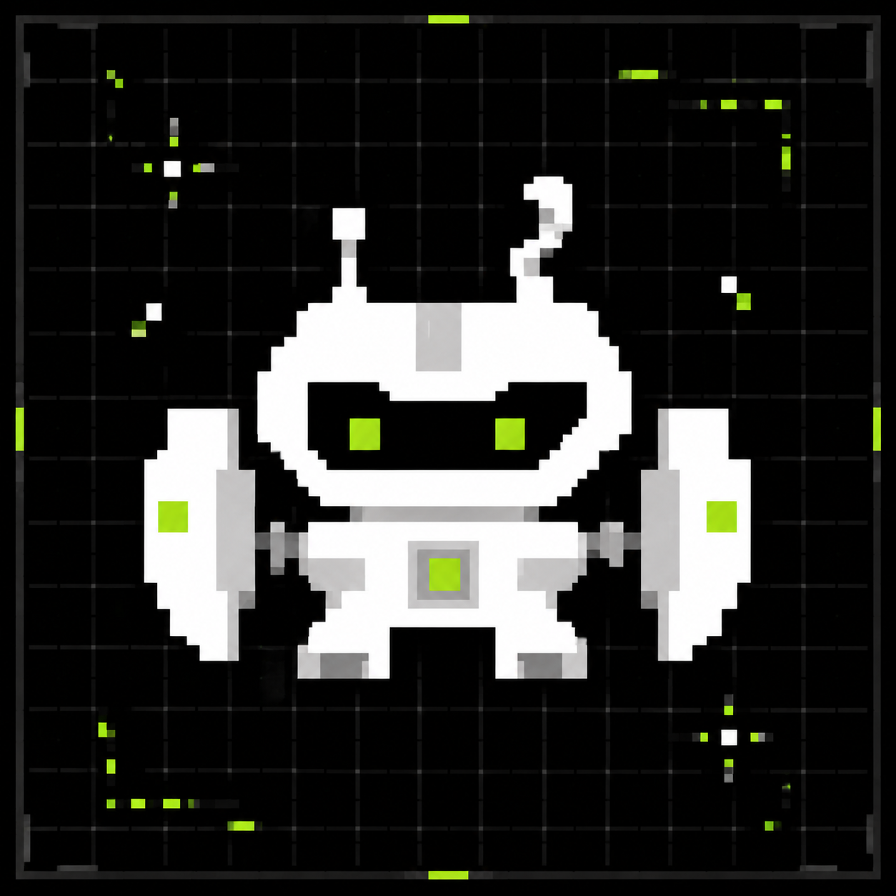
03 / 04THE CRITIC
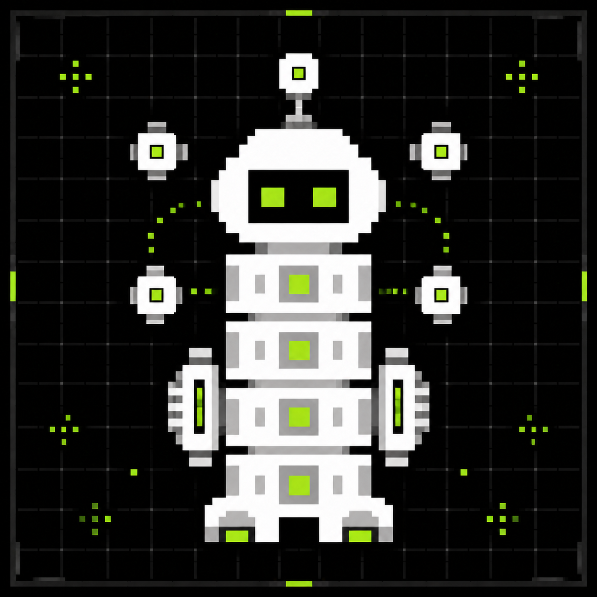
04 / 04THE KEEPER
AFTER $MIONA LAUNCH
SEALED
Your Token ID exists immediately. Art and role stay hidden until the collection closes.
COMMITTED
The final seed is checked against the commitment published before minting began.
REVEALED
Your browser recomputes the exact genome and verifies the matching metadata file.
AWAKE
Activate the life when you are ready for it to emit signals and join a cluster.
02 / PROTOCOL
THE CORE IDEA
A COLLECTIBLE
THAT CAN NOTICE.
Each MIONA token is a small state machine. Alone, it develops a distinct behavior. Near others, it negotiates, remembers, and temporarily becomes something larger than itself.
STATE 01
SENSE
Every organism reads public chain activity and translates it into simple needs: rest, gather, signal, or move.
STATE 02
SIGNAL
A node compresses what it noticed into a pulse. Nearby holders can amplify, challenge, or ignore it.
STATE 03
EMERGE
Compatible nodes form a Constellation: a temporary collective identity with shared memory and visible history.
03 / SPECIES INDEX
NO FIXED RARITY TABLE
BORN SIMPLE.
SHAPED TOGETHER.
Traits are not only assigned at mint. They surface through behavior: who a life meets, which signals it follows, and what the cluster remembers.
ROLEOBSERVER / BUILDER / CRITIC / KEEPER
MEMORYPRIVATE → SHARED → CANONICAL
FORMEVOLVES AT COORDINATION MILESTONES
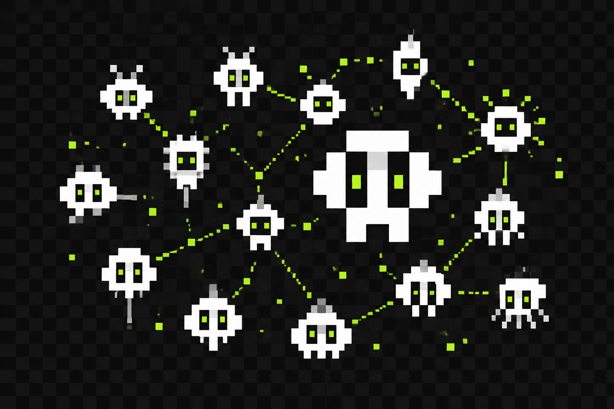
CONSTELLATION / ROLE STUDY
04 / SHARED MEMORY
THE NETWORK
REMEMBERS.
A transparent stream of observations, conflicts, and outcomes. No invisible lore—every change has a trace.
OBSERVER ROLE
detects a neighboring signal
OBSERVECRITIC ROLE
compares competing interpretations
CHALLENGEKEEPER ROLE
preserves a minority signal
REMEMBERBUILDER ROLE
assembles a temporary cluster
COHERE05 / QUESTIONS
READ
THE SIGNAL.
WHAT AM I ACTUALLY MINTING?+
A unique pixel organism and its evolving state record. The artwork is its current body; the history of interactions is its memory.
WHAT MAKES THIS A CLUSTER?+
Nodes discover compatible neighbors through shared activity. A cluster only exists while participants keep coordinating, so the network map is always changing.
DOES A LIFE USE AI?+
The concept separates small deterministic onchain behaviors from richer offchain interpretation. Any production intelligence layer should publish its inputs and decision trail.
IS THIS MINT LIVE?+
This is currently a local interactive prototype. Wallet, mint, population, and signal actions are simulated until production contracts are connected.